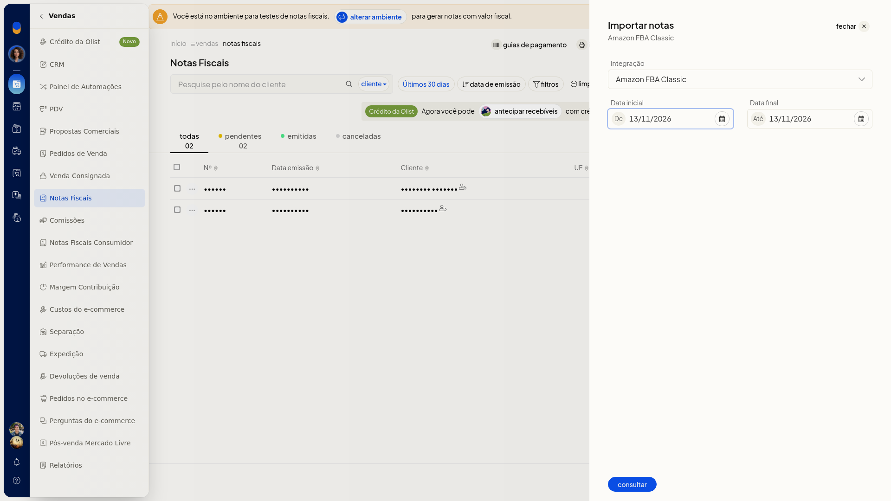

Importar notas do Amazon FBA Classic
No ERP da Olist, você consulta as notas do Amazon FBA Classic a partir de Notas Fiscais. A consulta usa a integração já conectada e um período.
O painel traz a conta e as datas para você disparar a consulta.
Pré-requisitos
- A integração do Amazon FBA Classic já precisa estar conectada. Em Integração, aparecem somente as contas conectadas.
- Se a opção não aparecer para você, peça acesso ao administrador da conta.
Instruções
-
Acesse Vendas > Notas Fiscais.
-
Abra Mais ações > Importar notas Amazon FBA Classic.

-
Em Integração, confira a opção Amazon FBA Classic.
-
Confira De e Até. Os dois campos abrem com a data do dia. Ajuste o período, se precisar.

-
Clique em consultar para consultar as notas do período.